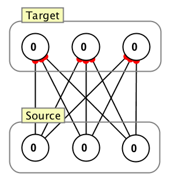

All to All Connection

All to All connects every source neuron to every target neuron. This is the most standard class of connections when dealing with feed-forward and fully recurrent neural networks. Optionally the user can set the percentage of connections which are excitatory (complimentary to the number of inhibitory connections), the type of synapse (distinct between excitatory and inhibitory connections), and whether or not the weights are randomized (including range, distribution, etc.).
Dialog Properties
Allow Self-Connections: If checked, self-connections will be created for each neuron which is designated both as source and target.
Excitatory/Inhibitory Properties: See Excitatory/Inhibitory Sub-Panel page.